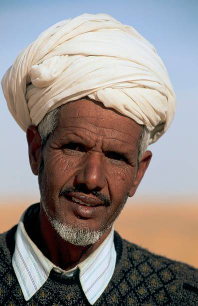

Les différentes ethnies de Mauritanie
Les Bidanes "Maures Blanc"
Les Bidhanes, ou Maures blancs, sont issus des populations berbéro-arabes.
Ils parlent l’arabe dialectal, appelé hassaniya, et sont traditionnellement des nomades.
Leur culture est marquée par la poésie, la musique (comme le tbal et l’ardin),
et une organisation sociale hiérarchisée.